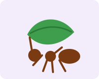
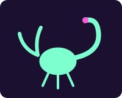

1. Choose an exhibit
Use the purple tabs at the top of every page to jump between the beehive, the leaf cutter ants and the Creepy Crawly Cave.
Small creatures. Big jobs. Come meet the bugs that keep our world running.
Start with the beehiveThis website is your guide to the zoo. It tells you what is waiting in each exhibit, explains how the animals live, and quizzes you along the way so you can show off what you learned. Kids and grown-ups can read it together.
Use the purple tabs at the top of every page to jump between the beehive, the leaf cutter ants and the Creepy Crawly Cave.
Learn who lives in each exhibit, what they eat and why they matter. Open the question boxes for extra surprises.
Answer the quiz questions at the bottom of each exhibit. Picked a wrong answer? Try again as many times as you like.
There are over a million known kinds of insects, and they are working all around you right now. Without them our gardens, farms and forests would stop working.

Meet the honey bees that pollinate the garden center right next door.
Visit the beehive
Watch a colony of fungus-farming ants at work all year long.
Visit the ants
Use a blacklight to make our scorpions and spiders glow.
Enter the cave